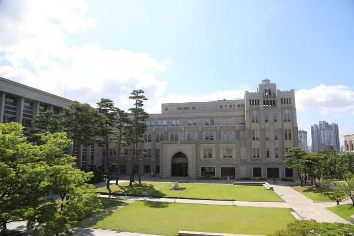

Find your research connections
연구와 사람
전공과 연구 키워드로 교수진을 살펴보세요.
전체 교수진 96명 보기Graduate research at KUBS
경영의 중요한 문제를 연구하는 사람들. 고려대학교 경영대학에서 나의 연구 주제와 연결되는 교수진, 그 이후의 진로를 만나보세요.

석사 · 박사 · 석박사통합
연구 주제로 전공을 탐색하고, 사람으로 그 가능성을 확인하세요.
Research areas
Find your research connections
전공과 연구 키워드로 교수진을 살펴보세요.
전체 교수진 96명 보기Research spotlight · LSOM
Careers after KUBS
석사·박사 취업자의 진출 분야와 학계에서 활동하는 동문들을 만나보세요. 전공을 선택하면 해당 전공의 통계와 동문 경력을 함께 볼 수 있습니다.
졸업생 진로와 자료 출처